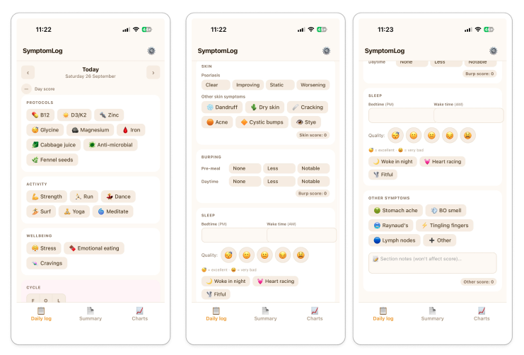
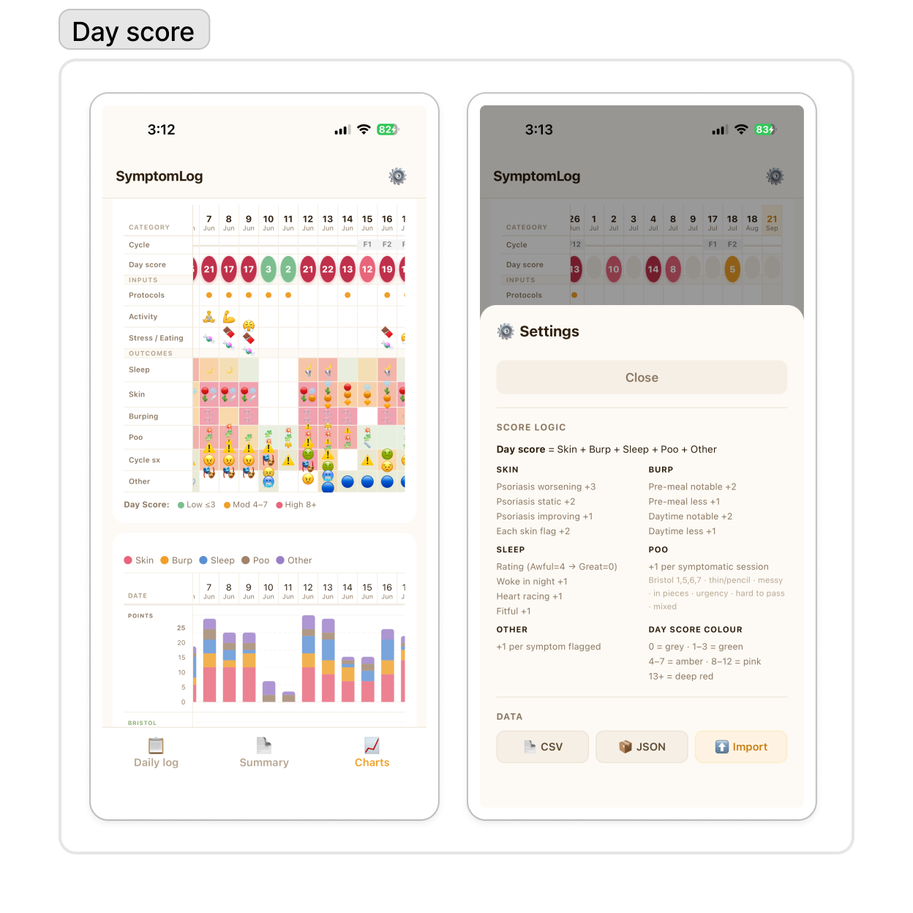
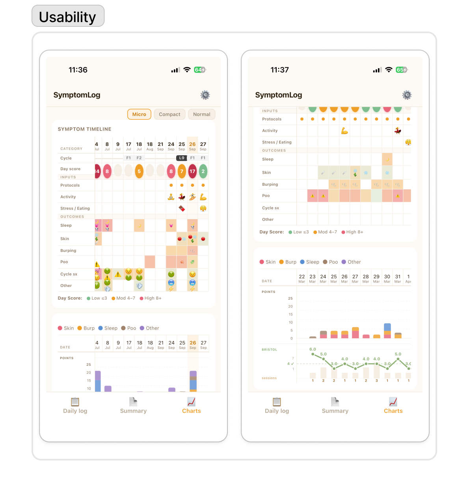

Symptom Tracking V1
What a lesson in product management. Drunk with my newfound Claude-enabled power, I packed too much into this next pass. I used it for about a month, interating over that time, but would call this app a failure.

Logging everything became a trap

I wanted to make sense of the data; this day score was a first pass
Once again, I developed a PWA. That code lives here. Before I critique it, here are some things I did like:
- The simple, delightful logging interface works well for this; tapping icons feels better and was easier to keep up than typing data into an excel sheet
- Charting the macro score was valuable
But it was too much. Here are a few things I learned:
- I wanted it to be easier to add new inputs / outcomes as I went; but I'm wary of additional technical complexity. This is a note I've parked.
- I didn't need the complexity on my phone of the charting + scores. I only wanted to look at that on an occasional basis and/or ahead of changes or doc appointments. I over-complicated the build trying to make it work on mobile before I realized that I don't want to spend the time on my phone looking at this data regularly anyway (so it was all moot).
- I couldn't get the menstrual section to work properly; once again spinning my wheels on this complexity rather than simplifying and re-focusing.

Making sense of the data on the mobile screen was a rabbit hole. There is a way, but I realized it's not worthwhile; I don't want to be on my phone for this anyway.